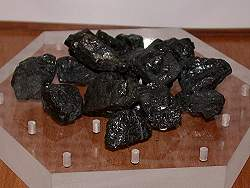
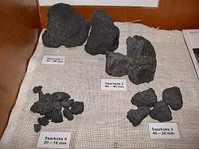

| In Deutsch |
| In Deutsch |
Coal Mines
Collieries
|  |
| Image: coal from the Saarland, size 10 to 20mm. |
In coal mines a strange black rock is mined, with some remarkable characteristics. It is rather soft, rather light and it burns, at least if it is dried before. Its values is known for This rock is composed mainly of carbon, which burns with the oxygene in the air to carbon dioxide and produces a lot of energy. millennia, but first it was only used to heat houses. It needed some time until man learned how to produce Coalite in a process called Coalite or Parker process. The coal is heted to 600° Celsius, which causes water, sulfur and gases to leave and only the pure carbon remains. Coalite burns hotter, has less ash, and is used for furnaces, steam engines and smiths fires. It is the base of the industrial revolution and the energy source of generations.
During centuries coal mines were the extremely important for all industrial countries. In the 20th century other energy sources, especially the oil, started to become more important than coal.
|  |
| Image: Coalite. |
To understand the mining of coal it is necessary to understand its typical deposits. The most important coal formations were deposited during the Carbon. The Carbon was named such because of the typical coal deposits. At this time Earth was much warmer with a higher amount of carbon dioxide in the atmosphere and thus a much higher glasshouse effect. Also central Europe was located near the equator at this time. This resulted in an abundant vegetation, with subtropic or tropic rain forests all over the continet.
At this time this whole area was a shallow basin with a continuous downlift. This plain was filled with a sort of swamp. The trees and leaves formed a moor on the wet ground, the died trees did not rot in theis swamp, but formed a layer of carbon rich peat. After the deposit of several dozen meters of peat, the whole area was covered by sand and gravel from the hills around. Layer above layer of plant remains and sand were deposited and subsided.
 |
Image: a typical mining situation with an rather thin and inlined layer of coal.
Note the horizontal access tunnels.
Model on display at the
 Saarländisches Bergbaumuseum Bexbach
. Saarländisches Bergbaumuseum Bexbach
.
|
After some time the depth and thus temperature and pressure increased, and the sand was transformed into sandstone. The peat was compressed too, the water pressed out. Many components of the plant remains were also pressed out, until just carbon with some water, sulfur and clay minerals remained. This is coal, and the process is called coalification.
The above example is the story of the Saarland in Germany. But similar stories happened in this Era all over the world, and so the first geologists in the 18th and 19th century called the layers with the many coal Carbon, the age of the coal.
The result are typically coal formations of several hundred meters. The coal leads are often very thin, but starting with 50 or 60cm they are thick enough to be mined. The tectonic forces which caused the downlift typically slanted the layers and so it is very common that coal lead are inclinded with about 30°. The mining is thus different for the access tunnels and adit, and for the mining of the coal. Access tunnels ar normal tunnels where a man can stand upright, were mine trains and conveyor belts are loacted. The mining in the coal lead follows the lead, which is scratched out by a special machine. The surrounding rock is not altered.
The mining would leave a very huge and very flat space, which would collapse almost immediately. There are two ways to cope with this, either allow a controlled collapse or fill it with other material. The amount of removed material is extremely high in a coal mine. So it is not always possible to fill all spaces. But controlled collapse has certain disadvantages, as the collapse works its way up to the surface and after some time destroys the villages above. Even if the gap was filled and the filled in material shrinks a bit when it is compressed, collapses are possible.
Coal mining is still important today. But the character of the interesting coal deposits ist different. This classical coal deposits are too expensive to mine. Some countries forced the mining for some decades by subsidizing local coal, primarly of political reasons, like being more independent from foreign energy. But still this kind of mining is not relevant any more. Modern coal fields are typically very big and very easy to mine, e.g. in huge opencast mines. The quality of the coal is not as important as it was. Probably the most important of those modern mines are located in Australia, producing coal for the iron industry in Japan and worldwide. Coal is mined open cast and tranported with exptremely long trains through the desert to the sea, where it is shipped.
- See also
 Search Google for "coal mining"
Search Google for "coal mining" Coal Information Page
Coal Information Page- Mines et charbon. Tout savoir sur les exploitations de houille
French only website specialized on coal mines.
- Larry Thomas (2002):
Coal Geology,
Hardcover: 396 pages, John Wiley & Sons; (October 18, 2002), ISBN: 0471485314.
amazon.com